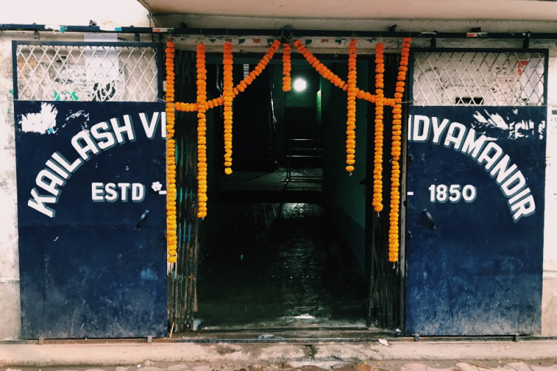
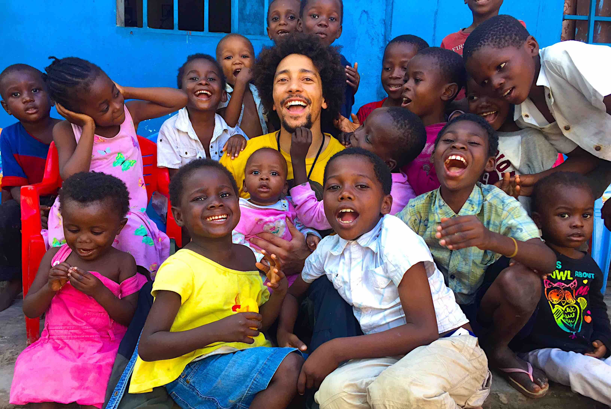
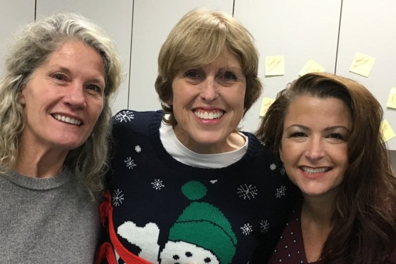
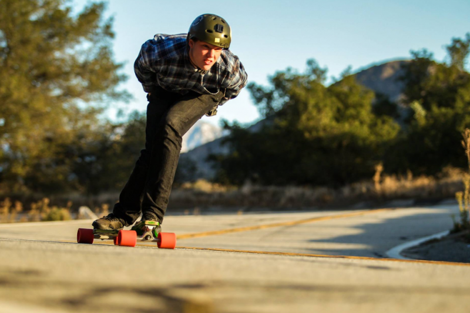
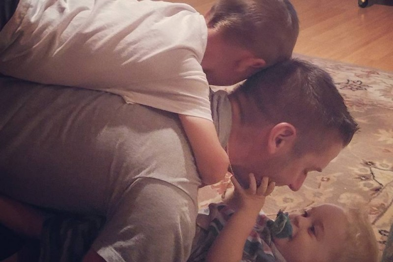

|

By: Shuvitro Roy On the corner of a busy intersection in Kolkata sits Kailash Vidyamandir.Kailash is an all-boys primary school and a co-ed secondary school that serves 700 students. 
Raised: $70 Goal: $640 |

By: Amy Watson One day in September 2015, I felt a lump in my left breast. I am not an alarmist, but I am also very educated and aware of what that could mean.
Raised: $116 Goal: $800 |

By: Chaka I have started a foundation called I Heart Africa, (iheartafrica.org) so we can help people in Africa who need it.
Raised: $1200 Goal: $4000 |
|

By: Debby Brosius, Jeannine Ball, and Lori Franzen Debby Brosius, Jeannine Ball, and Lori Franzen are veteran teachers at Los Alamitos High School with a combined 85 years of teaching experience; between us, that's over 15,000 students!
Raised: $600 Goal: $1200 |
By: Maxim Max My story begins with numbness. One day in 2012, three of the fingers in my left hand suddenly lost their feeling.
Raised: $243 Goal: $1200 |

By: Asley Stewart On January 13, 2017 an amazing friend and long time buddy of mine, Jonathan Strudwick, passed away in a car accident.
Raised: $350 Goal: $2000 |
|

By: John Will Paul E. Zurek, Jr., of Salem, New Hampshire and formerly of Reading, passed away unexpectedly on Sunday, October 2, 2016, after completing a half marathon with his wife in Hampton, NH, at age 36.
Raised: $500 Goal: $2000 |
By: Jackie Tanever In August 2015, when I was 53 years old, I was still grieving the loss of my father, who had died of heart disease the prior November.
Raised: $125 Goal: $820 |
By: Kylie Since I first contacted Kesha several months ago, we have been working together to try and find the best way to move forward with this campaign.
Raised: $543 Goal: $2500 |